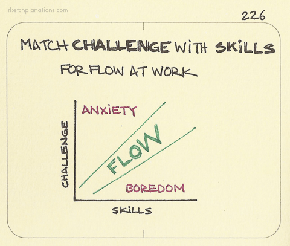
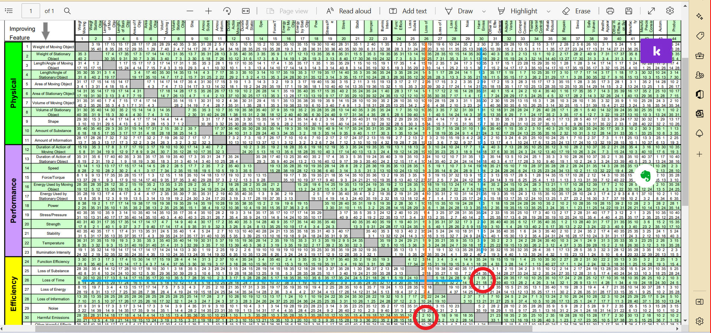

Here we go with another of my TRIZ Chronicles. The first edition
analysing the famous movie Lawrence of Arabia is
here.
The recent series of ads by Spotify have been very well received, by the
ad industry as well. There have been several of these ads, each with a
solid little story and a great punch line. There is one popular one that
I have selected here, featuring a Mother shopping for veggies, while her
son watches (and “listens”) to her bargaining with the shopkeeper.
Here I take just that highly effective ad and interpret it from a TRIZ
viewpoint.
This piece stems from my teaching a course on Creative Thinking and
Problem Solving based on TRIZ, titled Play and Invent, over the past 8
years or more at the Srishti Manipal Institute of Art, Design, and
Technology, Bangalore, India. (https://srishtimanipalinstitute.in).
The Famous Spotify Ad
Let us watch the Spotify ad first, before analyzing it!
The Young Man’s Problem
In order to make a story out of this, I want make a
Protagonist out the
young man in the ad. It is he who has the problem and he who is going to
apply TRIZ to solve it. I discuss the source of his Problem and give an
analysis of the Problem from a (classical) TRIZ perspective, including
the formulation of the Contradiction, Identification of Causes, the
statement of the Ideal Final Result, and finally using the TRIZ
Contradiction Matrix to find Inventive Principles, that lead to the
solution, which of course, is meant to unerringly include Spotify !
First a philosophical digression:—
Several authors have taken a Game View of life. James P Carse’s famous
book titled Finite and Infinite Gamesspeaks
of Play, Types of Games,
Rules, Winning and our own aims in the Game itself. A similar
articulation is, in my opinion, that of Mihaly
Csikszentlmihalyi
in his concept of Flow, shown here below:

From
Sketchplanations
When the Game presents very little Challenge, we are bored. When the
Game demands extreme skills the challenge is too much for us and we
experience anxiety. When the Challenge presented is just barely
matched by our Skill, we are in the zone of Flow, or what I call
Play.
A good metaphoric image for this experience is as follows:— that we
live in a space where the Floor of Boredom is always rising and would
crush us against our Ceiling of Anxiety. One Way to deal with this is
to develop more Skills and push the Ceiling away, effectively moving
into the zone of Flow. Another Way of looking at this is what Carse
suggests: When Play is no longer possible, change the Game.
So what does all this have to do with getting veggies?
The ad is, in my opinion, all about Boredom, and how to avoid it. And
not offend anybody. The Young Man (hereinafter, “YM”) simply has to
accompany his Mom, and be there while she gets the veggies. I will
exaggerate his irritation and his boredom at the risk of offending young
people likely to read this, and say that he would rather not be there
but he does not want to hurt Mom.
We are now ready for the TRIZ based Analysis of this Problem!
First, using the method described in Open Source
TRIZ, we identify knobs
or parameters within the situation and see how turning these could
lead to identifying a Cause for a Problem in the form of a
Contradiction.
Here below is a quick Ishikawa Diagram to help us identify the
Parameters of this Problem:
Turning the knobs/parameters in the Ishikawa Diagram, it seems that if
the YM goes to the market with Mom, he would most likely get bored, but
would please Mom. If he doesn’t go, then he chills at home, but Mom is
going to justifiably furious. Herein lies the Contradiction, which we
can now specify as an Administrative
Contradiction(AC) in
plain English:
AC: The YM wants to chill at home but Mom wants him to
take her veggie shopping. He has to put up with the Waste of Time,
and being bored, and Stress at being away from friends.
Next, based on this Contradiction and the inspection of the Ishikawa
Diagram above, we are now ready to define a TRIZ Ideal Final Result:
IFR: The YM must go to the Market and not be
bored.
Note again the impossible sounding way of expressing the IFR! One needs
practice, like the Queen in Alice in Wonderland, who could think of Six
Impossible Things before Breakfast ! Also note there could be other
ways of specifying the IFR. See below, section Alternative Ideas for
IFR.
Let us take the AC and convert it into a Technical Contradiction(TC),
keeping this IFR in mind. We will look at the 48 TRIZ Parameters in
the TRIZ Contradiction Matrix(PDF) and see which
Parameter we want to improve, while not worsening another. Here is what
we can obtain. We will analyze each Contradiction both ways1:
- TC 1: Improve Loss of Time (26) and not worsen
Effect of External Harmful Factors (30)
- TC 2: Improve Increase Productivity (44) and not worsen
Stress (19)
Here we choose these Parameters based on our IFR that while going to the
Market may be unavoidable, Boredom need not ensue. Parameters chosen
from the TRIZ Matrix can be thought of as metaphors for the knobs that
lie within our AC. Going from the AC to the TC is an act of making
metaphors. We could easily have chosen the Parameter Noise(29) as the
“metaphoric thing” to avoid, but the current IFR doesn’t quite support
that. There is here a considerable flexibility and possibility for
imaginative interpretations of the AC, but using the language of TRIZ.
We could also formulate a Physical Contradiction(PC)2:
PC: The YM must be in the market and not be in the market
at the same time.
which is aimed squarely at one of the Assumptions in the Problem, that
the YM simply has to go. Again, if the IFR is formulated differently we
could obtain a very different set of AC and PC. See below, section
Alternative Ideas for IFR.
In a future post, we will deal with using the PC and the TRIZ
Separation Principles to solve Problems.
Solving the Technical Contradiction
Let us take the both the TC-s into the Contradiction Matrix and arrive
at the list of TRIZ Inventive Principles. Here is the Matrix solution
for TC-1 in the figure below:

The two squares for the TC1 have been circled in red, solving TC-1.
The Inventive Principles are:(TC1, TC2, both ways)
1(Segmentation)
35(Parameter Change)
21(Skipping)
18(Mechanical Vibration) (!!)
2(Taking Out/Separation)
10(Prior Action)
36(Phase Transitions)
and with TC2:
3(Local Quality)
14(Spheroidality/Curvature)
9(Preliminary Anti-Action)
37(Thermal Expansion)
40(Composite Materials)
25(Self Service)
24(Intermediary)
That is a considerable list for us to try to use!! Let us apply some
these Inventive Principles! Viewing these Inventive Principles as we
Generalized Solutions we try to map these back into the Problem at
hand:
35(Parameter Change): Which Parameter to change? Location? No.
Sound? Change the “Bargaining Talk” into what? Sweet Musical
Lyrics!!🎵🤣
18(Mechanical Vibration) : What, make noise of your own? Yes!
Play Music !!🔉 🤣
14(Spheroidality): Wear “spherical” headphones!!🎧! Create a
“sound sphere”! This is a long shot!!
3(Local Quality): also indicates the creation of a “local”
cocoon around the YM, but needs to be combined with 18(Mechanical
Vibration) to truly arrive at the musical solution!
One could make decent interpretations of 2(Taking Out/Separation),
and 24(Intermediary), but we are already there! The rest are perhaps
(at least to me!) not very evocative, unless 37(Thermal Expansion)
means “throw a temper tantrum at Mom”? Never! So there you have it! The
Cinderella song
played on Spotify becomes not just a noise canceller but actually
seems to substitute the very conversation between Mom and the vendor.
And the YM has successfully attained Flow ! And the IFR too, since with
the music in his head, he is effectively “in the marketplace and not
in the marketplace at the same time!
And I attained Flow in writing this!!
Alternative Ideas for IFR
We note in passing that there is more than one way of formulating the
Ideal Final Result. Here are two more examples:
IFR2: The veggies should arrive without (the YM) going to the
Market
IFR3: Food should be prepared without having to go buy veggies.
Clearly these are at least as good as the one we have chosen, sounding
nicely “impossible” in their own right! The point is that in the
analysis of the Problem, we do need to ask Who has the Problem, as we
did, and the IFR needs to stem from there. These alternative IFRs
could well be the Voice of (another)
Customer.
If there is any interesting situation that could be analyzed with TRIZ,
please send me a DM! Thanks !
The Contradiction Matrix is not quite symmetric, so stating the
Contradiction both ways allows us to access a slightly larger set of
Inventive Principles from two cells of the Matrix.↩︎
Arriving at Physical Contradictions is not always easy! If we
can, then there are a very crisp set of TRIZ Separation
Principles that we can apply to solve the Problem.↩︎